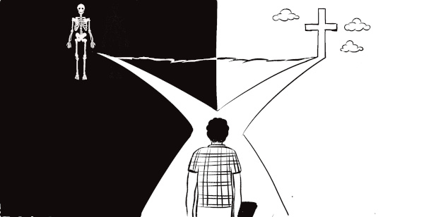

| 3 |
People are sinners. We do things that are wrong and this keeps us a long way from God. We cannot know and enjoy God's love and plan for our life.
|
3 |
Txhua tug yog tuabneeg txhum. Peb ua tej yaam kws tsi yog hab tej nuav ua rua peb txaav dleb ntawm Vaajtswv. Peb paub tsi tau hab zoo sab tsi tau rua Vaajtswv txujkev hlub hab lub tswvyim rua peb lub neej.
|
|
| PEOPLE ARE SINFUL |
TUABNEEG MUAJ KEV TXHUM |
|
‘All people have sinned.’ (They are not living the way God wants them to live.) Romans 3:23
|
“Txhua tug tuabneeg tau ua txhum.’ (Puab tsi ua neej le kws Vaajtswv has kuas puab ua). Loo 3:23
|
|
|
People were created to be friends of God, but because we wanted to please ourselves, we chose to go our own way without God. Our friendship with God was spoiled. This going our own way means doing things that God does not want us to do or taking no interest in God. This is what the Bible calls sin.
|
Vaajtswv tsim tuabneeg nrug Vaajtswv ua phoojywg, tabsis vim peb tsuas xaav ua kuas zoo peb lub sab xwb, peb tau xaiv taug peb txujkev tsi muaj Vaajtswv. Peb txujkev nrug Vaajtswv ua phoojywg tau puastsuaj lawm. Qhov peb taug peb txujkev nuav yog peb ua tej kws Vaajtswv tsi xaav kuas peb
ua losyog tsi quavntsej txug Vaajtswv. Vaajlugkub hu qhov nuav hastas yog kev txhum.
|

|
|
Why is it that most people are not living this full, best life?
|
Yog vim le caag coob tug tuabneeg tsi muaj lub neej puvnpo nuav?
|
| Because... |
Rua qhov… |